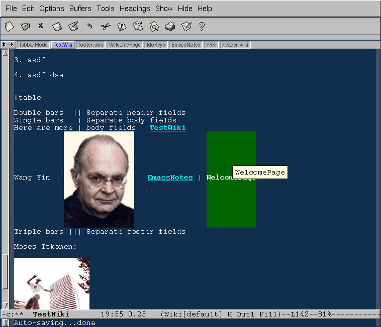

你是否经常需要写一些笔记，这些笔记之间有一定的相互关系，你希 望能够从一个主题能够很快的浏览到另一个主题，就像点击网页上的 连接。
你可以把你的笔记写成 HTML，但是这样做会使你自己的阅读依赖于 浏览器，你在编辑器里写好 HTML，然后却在浏览器里看这个笔记， 这使得你的思路混乱。如果直接在编辑器里看，你看到一大堆
<body> <p> <br> <hl> <img src="...">
这是不能忍受的！
而且在 HTML 里加入新的结点不是一个小工作，如果你用一个普通的 文本编辑器，你需要拷贝一个模板，写好内容，然后在需要连接它的 网页里写上：
<a href="...">我的下一个主题</a>
如果你在一个 WYGIWYS 的网页编辑环境，你需要点击一个加入连接 的按钮，选择一个名字，然后开始编辑新的网页。似乎工作不是很多？ 但是你有很多主意的时候，这么多步骤是难以忍受的！
而且你写好的东西很不容易管理。你不容易在主题之间浏览，不容易 找到所有连接到这个主题的主题(backref)。这个时候, Wiki 标记 (WikiMarkup)就是一个很好的选择。它的标 记就是非常简单的文本，一点也不影响阅读。
你可以看看，我编辑这个文本时看起来就是这个样子：

在绿色的文字上回车，就可以直接连接到我想看的目标。
使用 Wiki 最方便的办法就是使用 emacs-wiki, 你不但可以方便的 制造，浏览，编辑 Wiki，而且可以自动转换为 HTML，自动生成目录， 索引。你甚至可以在你的 Wiki 文件里插入任意的 elisp，可以进行 几乎任何操作，包括把你的 Wiki 通过 ftp 传到 Wiki 发布站点。
更多的信息请看这里 或 emacs-wiki.el作者的网页。